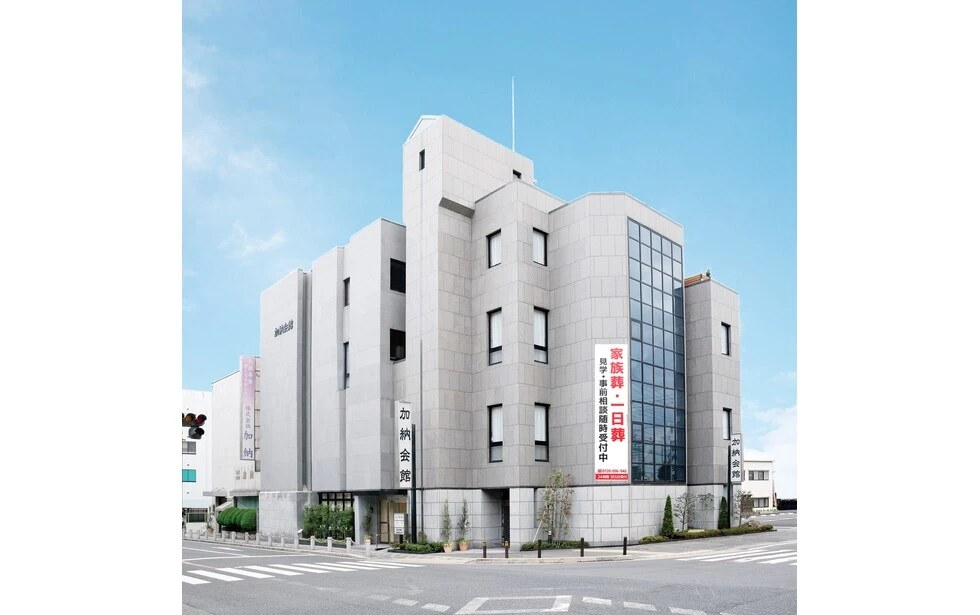
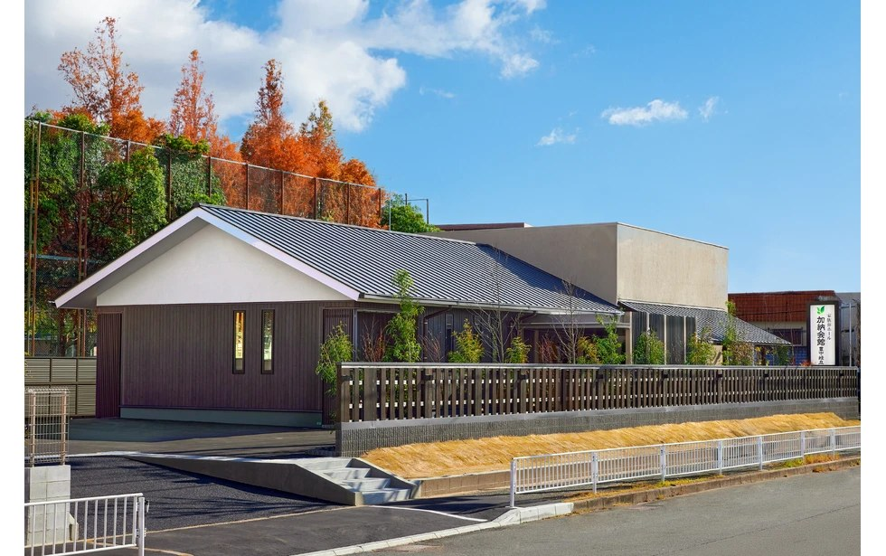
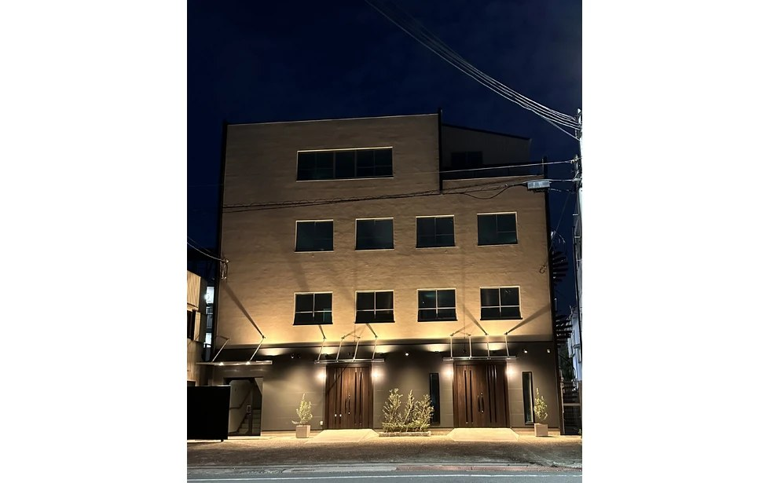
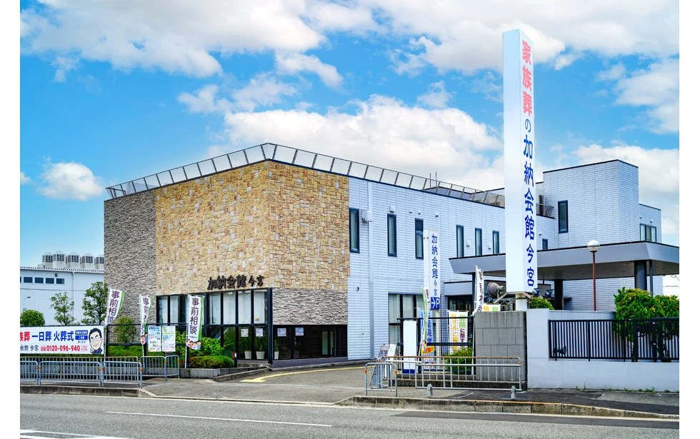
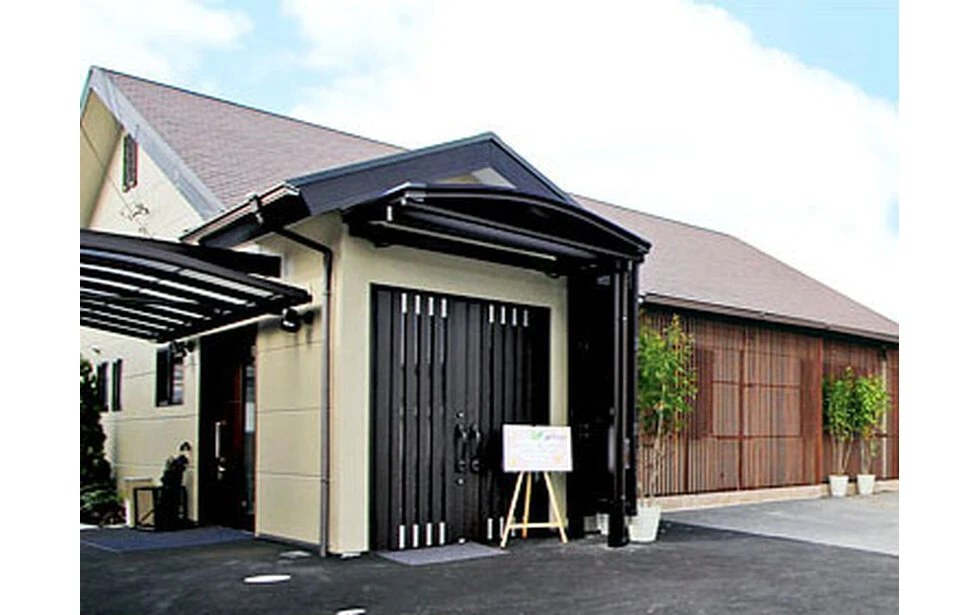
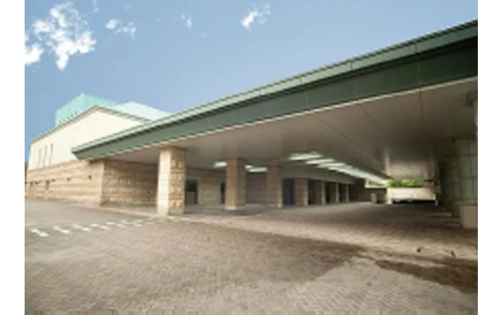
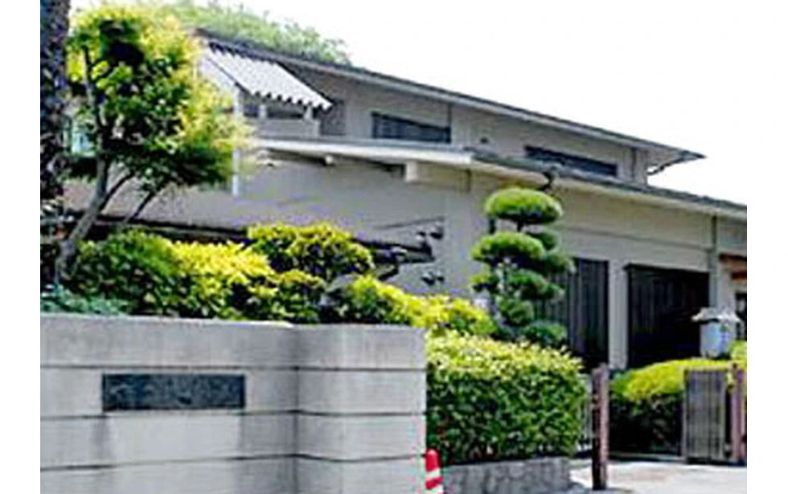

豊中市家族葬・一般葬加納会館 本館 ↗
少人数の家族葬から、お別れの会・社葬まで。
10件の会館を表示しています。

豊中市家族葬・一般葬少人数の家族葬から、お別れの会・社葬まで。
 豊中市一日一組
豊中市一日一組ご家族だけで過ごす、一日一組のお別れ。
 豊中市一日一組
豊中市一日一組住まいのような落ち着きに包まれる邸宅。

豊中市一日一組木のぬくもりが、気持ちをそっと和らげる。

豊中市一日一組思い出を囲んで、心に残るひとときを。

箕面市家族葬大切な方とゆったり過ごせる家族葬の会館。

池田市一日一組花に彩られた空間で、静かに偲ぶ。
 豊中市法要会館
豊中市法要会館故人を偲び、ご家族の想いをつなぐ場所。

箕面市公営施設式場と火葬場を備えた、公営の総合葬儀場。

池田市公営施設池田市民の皆様に親しまれる市営斎場。
写真だけでは分からない広さや動線、控室の雰囲気などを、実際にご覧いただけます。ご利用人数や必要な設備について、お気軽にご相談ください。
会館見学を相談する